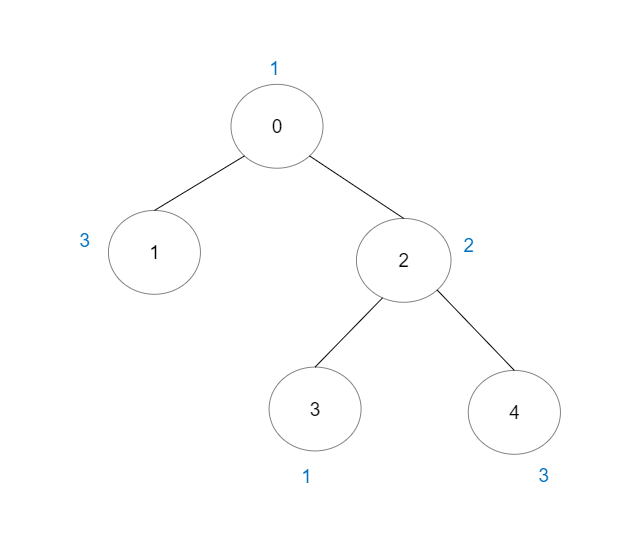
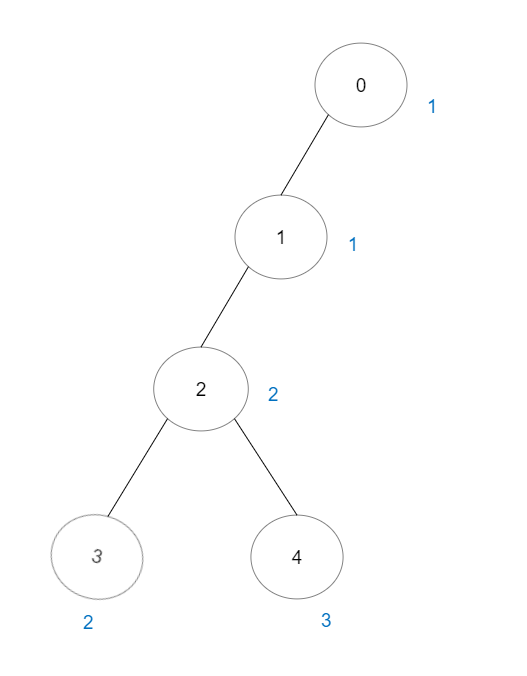
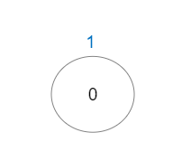

| Category | Difficulty | Likes | Dislikes |
|---|---|---|---|
| Algorithms | Hard | 2420 | 113 |
array | hash-table | tree | union-find | graph | sorting
google
There is a tree (i.e. a connected, undirected graph with no cycles) consisting of n nodes numbered from 0 to n - 1 and exactly n - 1 edges.
You are given a 0-indexed integer array vals of length n where vals[i] denotes the value of the ith node. You are also given a 2D integer array edges where edges[i] = [ai, bi] denotes that there exists an undirected edge connecting nodes ai and bi.
A good path is a simple path that satisfies the following conditions:
Return the number of distinct good paths.
Note that a path and its reverse are counted as the same path. For example, 0 -> 1 is considered to be the same as 1 -> 0. A single node is also considered as a valid path.
Example 1:

Input: vals = [1,3,2,1,3], edges = [[0,1],[0,2],[2,3],[2,4]]
Output: 6
Explanation: There are 5 good paths consisting of a single node.
There is 1 additional good path: 1 -> 0 -> 2 -> 4.
(The reverse path 4 -> 2 -> 0 -> 1 is treated as the same as 1 -> 0 -> 2 -> 4.)
Note that 0 -> 2 -> 3 is not a good path because vals[2] > vals[0].Example 2:

Input: vals = [1,1,2,2,3], edges = [[0,1],[1,2],[2,3],[2,4]]
Output: 7
Explanation: There are 5 good paths consisting of a single node.
There are 2 additional good paths: 0 -> 1 and 2 -> 3.Example 3:

Input: vals = [1], edges = []
Output: 1
Explanation: The tree consists of only one node, so there is one good path.
Constraints:
n == vals.length1 <= n <= 3 * 1040 <= vals[i] <= 105edges.length == n - 1edges[i].length == 20 <= ai, bi < nai != biedges represents a valid tree.